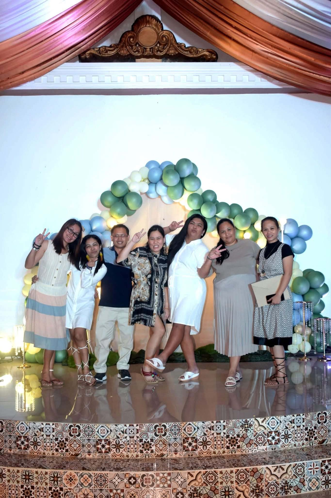
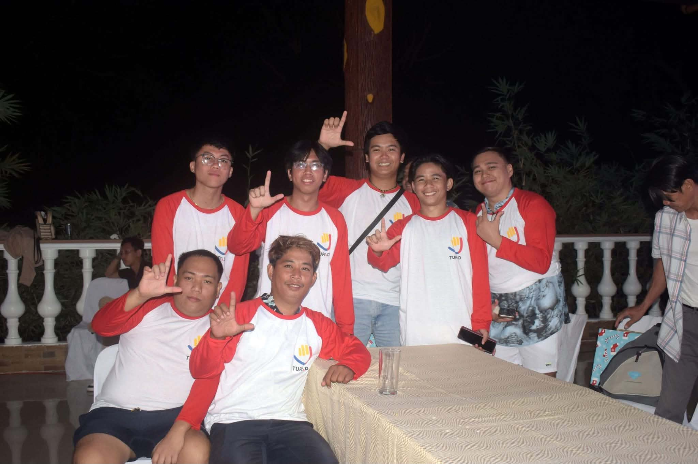
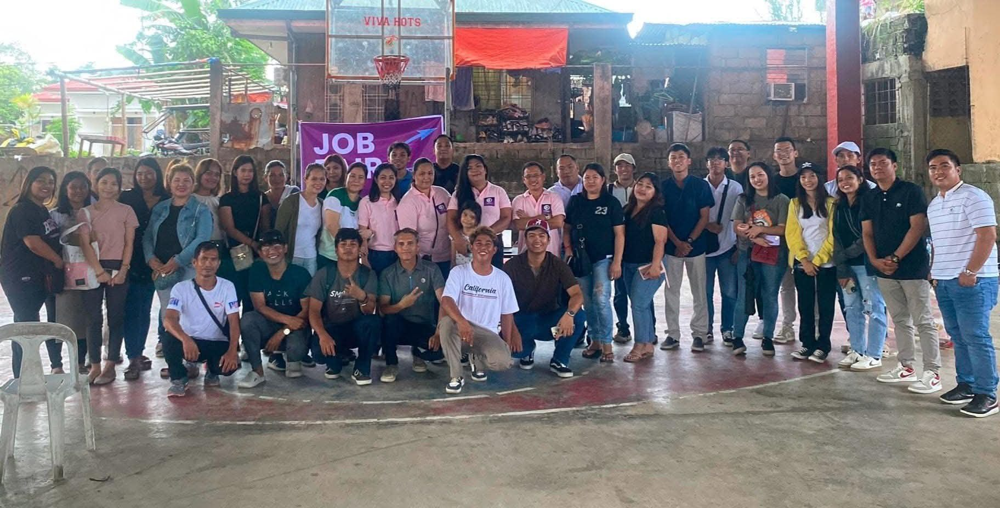

Our team
People are at the heart of the service.
Team experience, roles, and individual stories can be added here once TVA confirms the details and receives permission to publish them.
The Virtual Answer is built around people, thoughtful support, and a strong sense of community.



Team experience, roles, and individual stories can be added here once TVA confirms the details and receives permission to publish them.
Reach out to discuss the kind of support your business is looking for.